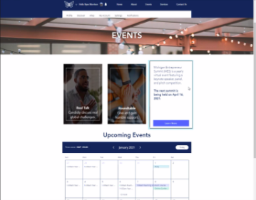

Projects
Project Background
Startup Background: Maximize Solutions LLC (DBA: Maximize) is a peer-to-peer platform that delivers aspiring entrepreneurs with a give-first community and tool-kit that helps them save time and money while creating quality companies of the future. Our vision is to unite individuals and organizations across the world by facilitating a growth-minded alliance based on values of diversity, equity, and inclusion for the greater good of humanity.
Project Goals
- Create a user friendly interface to promote the lifelong learning of entrepreneurs.
- Organize information in the best logical manner to share resources with the Maximize Alliance.
- Help create a functional website with majority of the elements allowing allies to find resources and events.
- Introduce and promote Maximize by having a clear and concise website.
Wireframes
Here we can see the sketches for the Home page. Since the landing page linked to different pages, it was important to take into account information hierarchy. Content placement that would optimize engagement, branding, and marketing was taken into account.
The following section focuses primarily on the Media page. Keeping the design clean and modern looking was priority. Because this page would link to social media accounts, podcasts, and highlights of previous events, it was crucial that there were no barriers for the user.
Highlighting when the next events were taking place was a key aspect for the evnts page. We wanted to maximize engagement and minimize hassle of putting that event on someone's calendar. Moreover, it was also important to eggectively, yet concisely present more information about such events.
The About page mainly served for the user to see a face to the project; therefore, it was crucial to make it easy for the user to know who the team was, why they were pursuing this project, and they can get innvolved or in touch.
Design Application
Having multiple iteration sketches for the About page, the implementation of the website ended up looking very similar to the wireframe sketches. A change that was made to the About page was that our Home page now incorporated our mission and vision statement. The main reason for this was to make it more visible to users as they opened the website.
Adding an opportunity for users to become allies, the Home page included a description of events and services where the user will be able learn more and click and sign up as an ally to get access to further information. This served as a funnel to grow the Maximize network.
Final Takeaways
The intention of this website was for current and potential Maximize Allies to get a better understanding of what products and services Maximize has to offer. Aiming to create a quality experience, another objective of the site is to allow Maximize Allies to interact with the rest of the alliance; therefore, validating our design decisions with user testing is going to be a key step that will determine what updates and improvements will be made in the near future.
Reflection
Overall, I really enjoyed learning about the design process and getting more experience by preparing to launch a website. Taking the perspective of a new user that may not know about Maximize and designing the site around creating a quality and smooth experience really taught me more about how individuals think when they interact with technology. Moreover, while using information hierarchy and creating wireframe sketches, I found that it became easier to visualize the steps a user would think about, which was more beneficial rather than just jumping into the implementation of the website. Thinking back to sites I’ve visited in the past, I really wanted to make sure that information was clear for the user and they did not have to spend time going back and forth to see the full picture of the services offered. Focusing on this and keeping a modern feel, we were satisfied with launching the first design for the website.